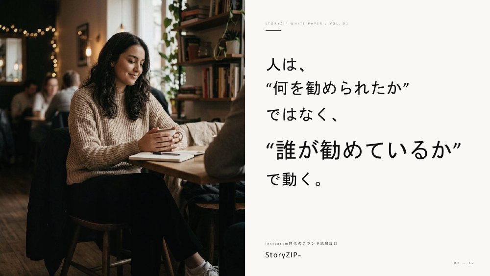
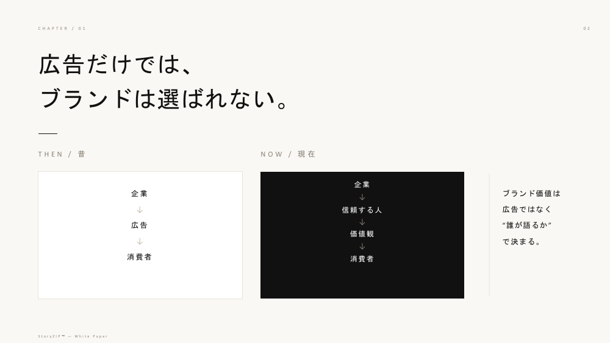

商品・サービス・アプリ・イベント・観光の認知づくりに。
良い商品なのに、知られていない。
どんなに良い商品やサービスも、知られていなければ、選ばれることはありません。
届けたい価値を、誰に、誰から伝えるか。JOY ZIPPERが、ブランド認知のつくり方を一緒に考えます。
こんなお悩みありませんか？
認知、サイトへの誘導、動画づくり。いま、どこに課題を感じていますか？
-
商品は見られているのに、ブランド名で検索されない。
-
インフルエンサーPRが、単発で終わってしまう。
-
広告費をかけても、ブランドが育っている実感がない。
-
広告やECで使える動画を、もっと増やしたい。
-
誰に届けるかだけでなく、誰から伝えるかも考えたい。
-
SNS施策の判断が、担当者の経験や感覚に偏っている。
誰に届けるか。その先の、誰から伝わるかまで。
SNSでは、興味や利用行動に応じて、表示される情報が変わります。だから私たちは、届けたい人が何に関心を持ち、誰の発信を見ているかまで考えます。
広告・検索・SNSなどの接点を、目的に合わせて組み合わせます。
ブランド認知を設計するPRサービス、StoryZIP™︎。
商品やサービスに合うインフルエンサーを選び、Instagramストーリーズで短期間に集中して紹介。サイトへの導線と、広告やECでも使える動画の納品まで設計します。
補足：インフルエンサーは、生活者に情報を届ける発信者です。フォロワー数に加え、普段の反応や、商品・サービスとの相性を見て選びます。
コミュニティは設計例です。実際の対象は商品・目的に合わせて検討します。
一つの商品にも、届け方は一つとは限りません。
一度のPRで、認知も。広告やECで使える動画も。
投稿に加えて、動画の制作・納品までPR費用に含みます。使う場面が伝わる動画を、その後の発信にも活用できます。
UGC動画を納品
インフルエンサーが出演・制作する、利用シーンを伝える動画。
二次使用料は無料
納品動画を、別の発信にも活用できます。
オール媒体に対応
広告・EC・LP・SNS・営業資料・店頭など。
利用条件や編集の可否は、ご契約時に確認します。広告の配信費・運用費は、PR費用とは別です。
投稿の前から、活用の先まで設計します。
コミュニティ設計
趣味や価値観、ライフスタイルから、届ける相手を考えます。
発信者の選定
フォロワー数に加え、反応やフォロワー属性、商品との親和性を確認します。
クリエイティブガイドの作成
毎回、ブランドと企画の意図、表現のルールを共有します。発信者それぞれの個性を活かしながら、ブランドらしさと利用シーンが伝わる動画を目指します。
集中投稿
複数の発信者による紹介や、同じ発信者による再紹介の時期を設計し、接点の積み重ねを目指します。
数字で振り返る
リーチ、表示回数、リンククリックなど、取得できる数値で施策を確認します。
課題に合わせた設計を、実績でご紹介します。
何を届け、どう紹介し、どんな反応があったか。施策ごとの結果をご紹介します。
投稿のあとも、動画を活用できます。
利用シーンを伝える動画を、広告・EC・SNS・店頭などへ。


考え方と仕組みを、もう少し詳しく。
推薦者の選び方、コミュニティの考え方、ストーリーズと動画の活用方法を、全12ページにまとめました。
StoryZIP™︎ White Paper／Instagram時代のブランド認知設計
無料ダウンロード一度、あなたのブランドについて聞かせてください。
StoryZIP™︎が最適かどうかは、まだ分かりません。まずは課題を整理し、目的に合う方法を一緒に考えます。
StoryZIP™︎が最適でない場合は、別の方法をご提案します。
無料ブランド認知シミュレーション
お申し込み内容を確認し、担当者が個別にご案内します。必要に応じて追加でお話を伺い、次の項目を整理します。
- おすすめのコミュニティ
- 推奨する起用人数と投稿数
- 想定リーチと試算の前提
- 概算予算
- 動画や施策の活用イメージ
補足：数値は条件に基づく想定で、成果を保証するものではありません。
よくあるご質問
目的、届けたい相手、必要な投稿や動画の内容に応じて個別に設計します。まずは概算をご相談いただけます。
担当者が内容を確認して個別にご案内します。自動計算ではありません。
売上の保証は行っていません。認知やサイトへの誘導、動画の獲得など、今回の目的と評価する指標を事前に整理します。